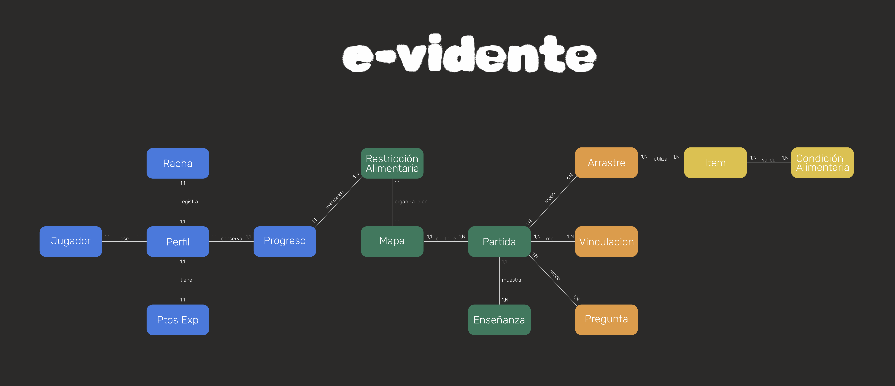

Modelo de Entidades y Relaciones
Tres capas porque mezclarlas confunde. El dominio del juego (E1/E2) no cambió en E3 — lo que cambió es dónde guardamos el progreso del jugador. Para la defensa TTIP: Presentación Entrega 3.
save_data.json manda. Sin red, el juego corre igual.
Cola offline, merge al login, idempotencia por clientRunId.
8 tablas alineadas al dominio Excalidraw. Solo estado del jugador.
Diagrama original Excalidraw. Jugador, mapa, partida, modalidades, ítems. Sin tablas SQL.
E3 →user://save_data.json + PostgreSQL con la cadena completa de tablas y la capa de sync.
Evolución por entrega (E1 local → E3 sync) y swimlanes: partida completada + login/merge.
E3 · Defensa →Portada del sprint: historias, avance Jira, guión de 10 minutos y links a evidencia.
Docs →Tabla dominio → local → Postgres, esquema canónico y referencias al código fuente.
Cómo evolucionó el MER

user://save_data.json · sin backend
users → profiles → progress_restrictions → history_games → gamesstreaks · images · restriction_node_config
save_data.json sigue siendo la fuente primaria.
Se agrega backend_sync_queue.json para cola offline
y backend_session.json para JWT entre sesiones.
SincronizadorPartida → ProgressSyncService → batch POST.
Idempotente por clientRunId. Merge con ImportadorProgresoOnline al hacer login.
Línea de tiempo
user://save_data.json vía SaveManager.
Sin backend ni PostgreSQL.
clientRunId para idempotencia.
Autenticación JWT, perfil de jugador, rachas y resumen de partida remoto.
Decisiones de diseño
save_data.json antes
de cualquier operación de red. La partida no puede "perderse" por un problema de conectividad.
clientRunId)
que el backend usa para evitar duplicados: INSERT ON CONFLICT DO NOTHING.
games.
juego/contenido/),
no en tablas SQL.
CargadorDeMapa es mucho más ágil.
player_*, game_sessions,
completed_nodes fueron eliminadas y reemplazadas.
best_accuracy entre
ambas fuentes. El jugador nunca pierde un récord.
Mapeo dominio → implementación
| Entidad del dominio (E1/E2) | Save local (Godot) | PostgreSQL (E3) |
|---|---|---|
| Jugador | runtime (memoria) | users |
| Perfil | save_data.profile username · birth_date · avatar_path |
profiles exp_count · current_restriction |
| Racha | progress.progress_system_states.streak | streaks current_count · best_count |
| Ptos Exp | save_data.total_exp | profiles.exp_count |
| Progreso (por restricción) | node_progress + flags de campaña | progress_restrictions completed_nodes_count · map_completed |
| Nodo del mapa completado | node_progress[node_id] completed · best_accuracy |
history_games UNIQUE(progress_id, node_id) |
| Intento de partida | payload en backend_sync_queue.json | games client_run_id · score · accuracy |
| Avatar | profile.avatar_path + archivo en avatars/ | images (base64) users.avatar_image_id FK |
| Mapa · Partida · Modalidades | juego/contenido/mapa/*.json | no persiste (solo estado del jugador) |
| Ítem · Condición Alimentaria | items_celiaquia.json + .tres | no persiste (catálogo de contenido) |
Traducción remoto → local: ImportadorProgresoOnline.construir_snapshot_local() ·
Sync local → remoto: SincronizadorPartida → ProgressSyncService → POST /batch